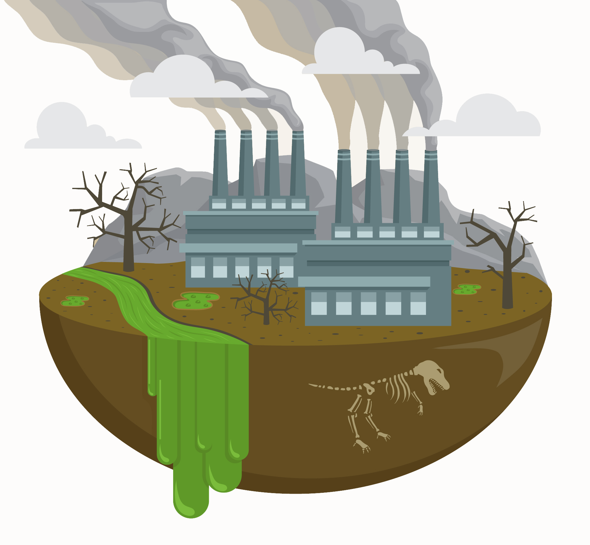

Tentang Pencemaran Lingkungan
Pencemaran Lingkungan adalah masuknya atau dimasukkannya makhluk hidup, zat energi, dan atau komponen lain ke dalam lingkungan, atau berubahnya tatanan lingkungan oleh kegiatan manusia atau oleh proses alam sehingga kualitas lingkungan turun sampai ke tingkat tertentu yang menyebabkan lingkungan menjadi kurang atau tidak dapat berfungsi lagi sesuai dengan peruntukannya.
